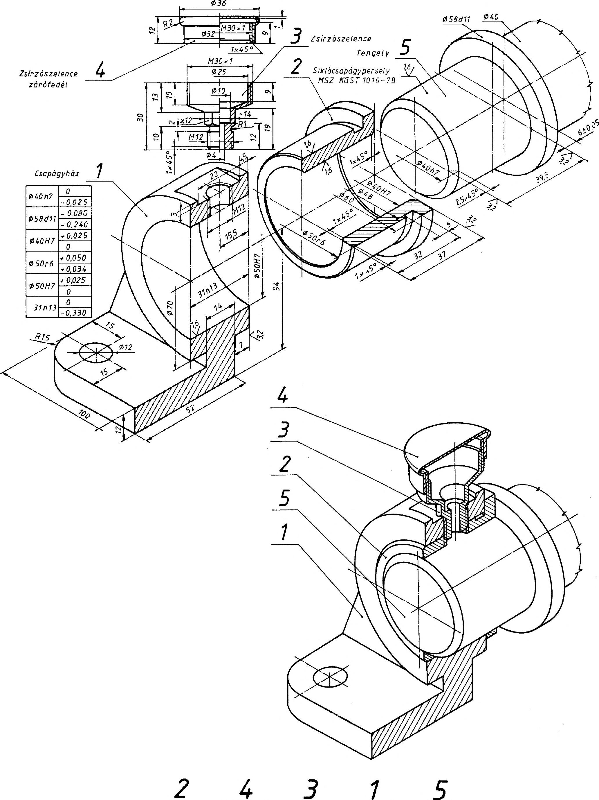

20. Csapágyak, csapágyazások 20. Csapágyak, csapágyazások 20.1.2. Siklócsapágyak ábrázolása A járművek, gépek, berendezések tengelyei, forgó alkatrészei valamilyen csapágyazással kapcsolódnak a gépegység házához. A csapágyazás lehet sikló- vagy gördülőcsapágyazás. A siklócsapágyaknál a tengely felülete elcsúszik a csapágypersely felületén. Ezt az elcsúszást az olaj film segíti. A gördülőcsapágyazásnál a tengelyre szerelt - legtöbbször külső és belső gyűrűben zárt egységet képező - gördülőcsapágy gördülőtestei (golyó, görgő, kúpgörgő, tűgörgő) elfordulhatnak, ezáltal a tengely számára könnyű forgást tesznek lehetővé. 20.1. Siklócsapágyak A forgómozgást végző gépalkatrészeket (fogaskerekeket, lánckerekeket, szíjtárcsákat stb.) a csapágyak támasztják meg. A forgó alkatrész tengelyének csapjait oly módon támasztja a csapágy, hogy az a forgást ne akadályozza. A tengely csapja közvetlenül nem érintkezik a csapággyal, köztük kenőanyag van, ezért a felületek egymáson siklanak (siklócsapágy). Kétféleképpen működő siklócsapágyat különböztetünk meg: - álló tengely körül a csapágy forog (pl. a kocsikerék csapágya). - álló csapágyban a tengely forog (leggyakrabban előforduló eset, pl. a gépkocsi motor főtengely nyugvó csapágyai). Az ellentétes jellegű működés közös jellemzői: - a csapágyfurat és a tengelycsap keresztmetszete kör, - a felületek egymáson csúsznak (siklanak), - a csúszást kenéssel tudjuk elősegíteni. Az ilyen működési feltételekkel dolgozó gépelemeket siklócsapágyaknak nevezzük. A siklócsapágyak rendeltetése a forgómozgás biztosításán kívül a tengelyre ható erők felvétele (támasztás). A csapágyazás a gépeknek nagyon gyakori eleme mert az alkatrészek nagy része energiatovábbítás közben forgómozgást végez. Az energia továbbítása azonban csak veszteséggel lehetséges. A csap és a csapágy közötti súrlódás melegedést okoz, a melegedésre elhasználódott energia munkavégzésre nem alkalmas. A súrlódás és ezzel a csapágyazás vesztesége kenéssel csökkenthető, de teljesen meg nem szüntethető. 20.1.1. A siklócsapágyak fajtái, szerkezeti kialakítása Az alkalmazás körülményeitől függően a csapágy szerkezetek sokféle változata fejlődött ki. Leggyakrabban használt csapágytípus a hordozó csapágy. Szemcsapágyak A legolcsóbb és legegyszerűbb szerkezetű hordozócsapágy a szemcsapágy. A ház egyetlen öntvényből készül. Anyaga acél vagy öntöttvas. Persellyel és persely nélkül egyaránt használatos. Perselyezett kivitelben a csapágy a persely felszabályozása vagy cseréje útján könnyen javítható. Osztott csapágyak Ha a tengely vagy a csapágy tengelyirányban nem szerelhető, akkor a csapágyházat és a perselyt is az átmérősík mentén osztani kell. Támasztó csapágyak Tisztán tengelyirányú vagy főleg tengelyirányú terhelés felvételére a tengelyt támasztó csapágyba kell szerelni. A talpcsapágy a függőleges tengelyt a végénél támasztja meg. A siklócsapágyak ábrázolása nem tér el az eddig tanultaktól. A csapágyperselyeket metszetben ábrázoljuk (296. ábra). A fém (bronz, réz stb.) csapágyperselyek méreteit szabványban írják elő. A perem nélküli és peremes és az önbeálló csapágyperselyek rajzát és méreteit az 24, a 25 és a 26. táblázat szemlélteti. A fémből készült csapágyperselyek csúszástulajdonságait javítani lehet, ha ún. csapágyfémötvözettel kiöntjük a csapágycsészét (csapágyperselyt). A géprajzban kettősfém csapágypersely esetén (vékony csapágyfémek esetén) a csapágyfémet kiemelt vonallal ábrázolhatjuk, ill. méretarányos rajzon a csapágyfém méretének megfelelően befeketíthetjük 85
